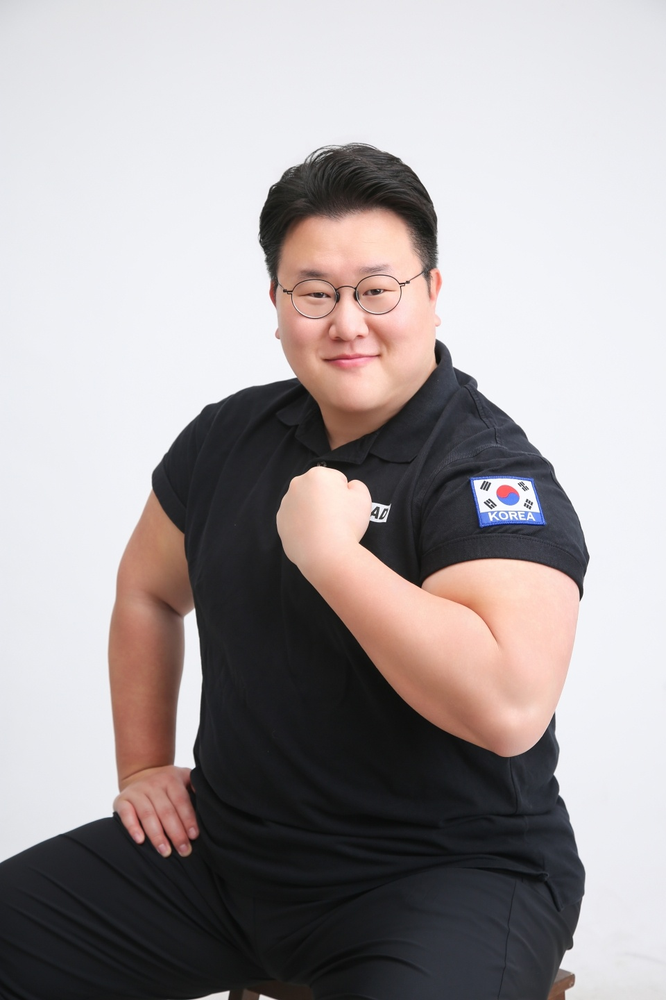

사람과 사람 사이를 잇습니다.
그 과정에서 필요한 일, 하고 싶은 일을 돕습니다.
모든 일은 믿음과 올바름, 이 두 가지를 묻습니다.
국가와 국가 사이도 다르지 않습니다.

필요한 물건, 필요한 일, 필요한 사람 — 필요한 모든 것의 왕래를 돕습니다.
브랜드를 ‘쓰는’ 일에서 시작해, 사업을 ‘키우는’ 일로, 그리고 국회에서 일을 ‘매듭짓는’ 자리까지 — 한 단계씩 영역을 넓혀왔습니다.
상장사 브랜드 카피라이터로 커리어를 시작했습니다. 말과 글로 브랜드를 설득하는 법을 익혔습니다.
스타트업으로 자리를 옮겨 마케팅을 담당하며, 글을 쓰던 사람에서 사업을 키우는 사람으로 나아갔습니다.
대한민국 국회에서 입법을 조사하고 의정을 보좌하며, 사람과 제도 사이에서 일을 매듭짓는 법을 익혔습니다.
민관·산업·학계를 잇는 민관산학 거버넌스 과제를 기획하고 수행합니다.
뉴홍콩시티 프로젝트의 사업 타당성 조사(F/S) 용역을 수행했습니다.
강화군의 2050 탄소중립 달성을 위한 녹색성장 기본계획(2025–2034) 수립 용역. 기후변화 대응 동향·여건 분석, 부문별 온실가스 배출 현황 및 감축 로드맵, 강화군 탄소중립 비전·목표와 군민참여 활성화 방안을 다뤘습니다.
계양 테크노밸리에 적합한 창업 활성화 방안 수립 정책연구. 국내외 혁신클러스터 성공사례와 국내 테크노밸리 현황을 비교 분석하고, 계양지구 핵심·권장업종(안)과 한국판 뉴딜(디지털·그린) 연계 방향을 제안했습니다.